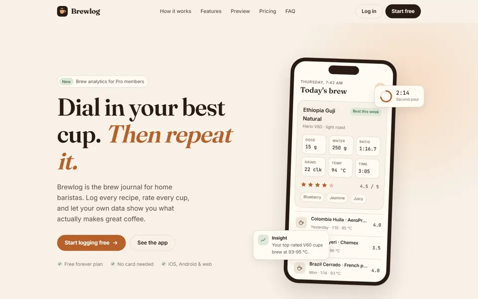
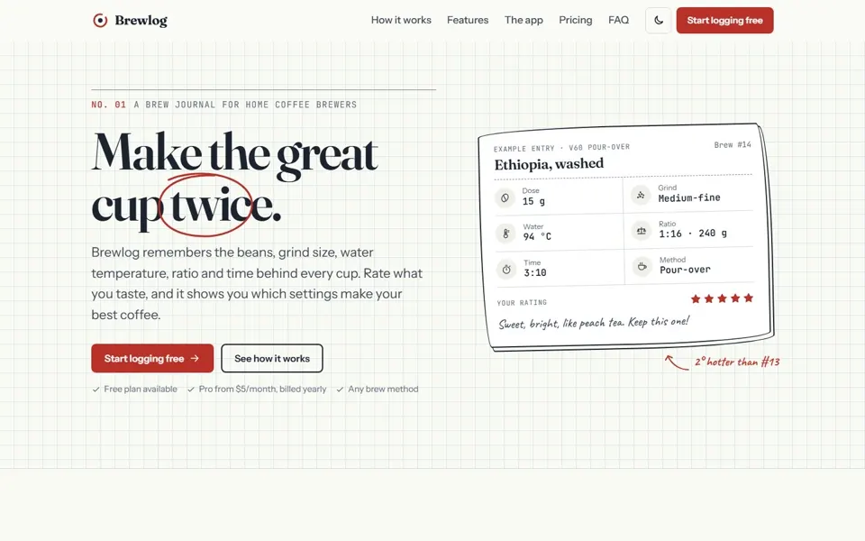

Test 01
Brewlog marketing website
Claude Code + Claude Opus 5.5 (medium effort)
- Without DENT
- 38/50
- With DENT
- 44/50
- Difference
- +6 (DENT higher by 6)
Both are polished. Without DENT: a well-made but familiar SaaS page (warm gradient, “New” pill, floating phone mockup). With DENT: a brew-journal concept on grid paper that passes every automated gate.
Automated gates: without DENT failed text contrast (G3); with DENT passed all 5.
Close to protocol No questions on either side; the prompt forbids them.

